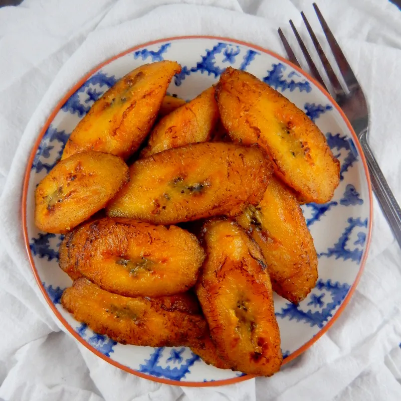

Sweet Platain

Fried sweet platain
the fried sweet platain is a popular caribbean dish, is easy to preapre and fast to cook.
Ingredients
- Yellow platain
- Olive oil
- A pisk o salt
Steps
- Pail and cut the sweet platain
- Set a pan on fire and pour the olvie oil
- When the oil get hot pour the platain
- Wait till platain get a golded color in order to take the platain off the pan
- Use some pisk salt onto your platains
- Lets eat !!!!!
Home